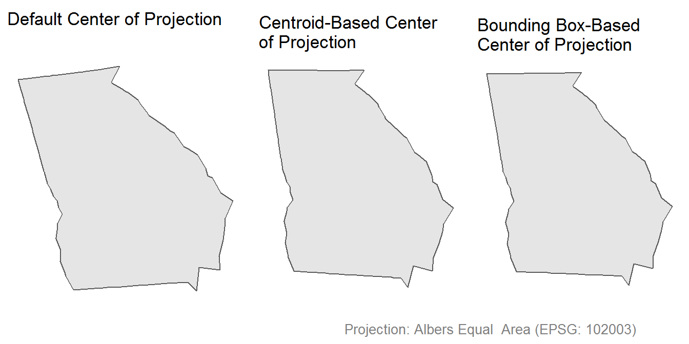
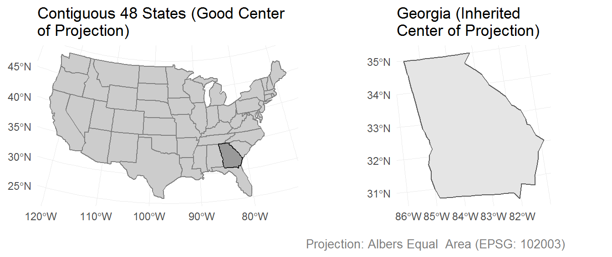
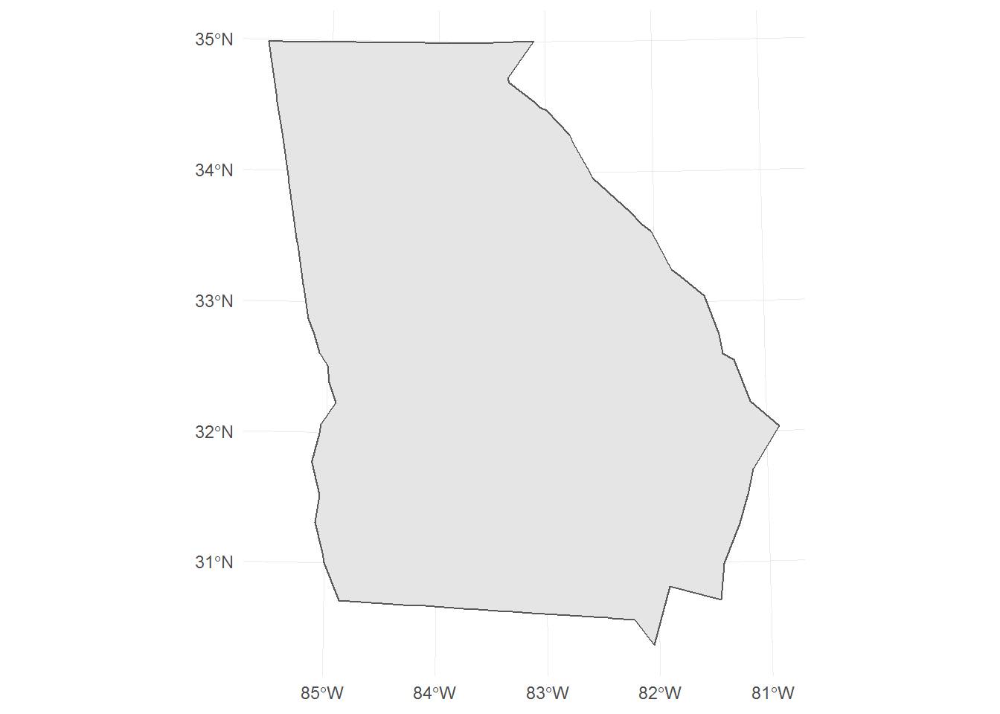
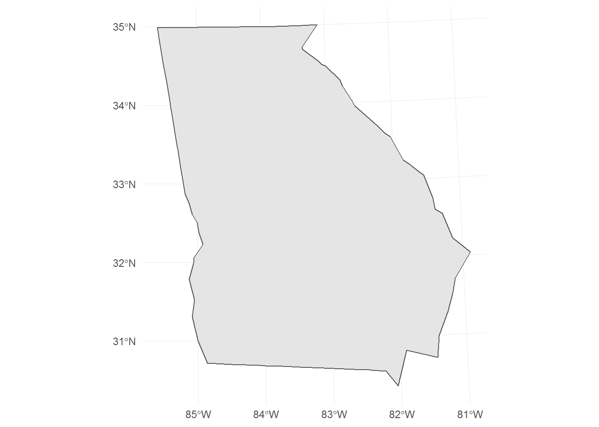
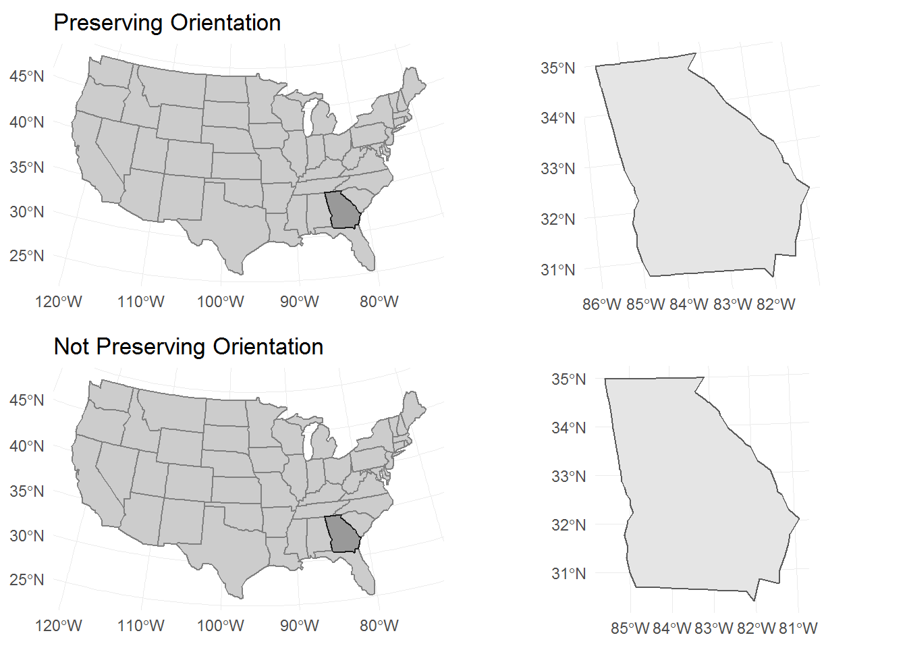

The following map of Georgia comes from the Washington Posts’ coverage of the 2018 primary elections.

These kinds of maps - where the center of projection is not based on the feature being mapped - are seen quite often in the Washington Post, New York Times, and other major US news publishers.
The map at hand shows the state of Georgia - tilted to the left, as though rotated counter-clockwise about its center. Why is that?
Defaults

The map-making software used by the Washington Post is doing one of two things:
- Preserving the center of the contiguous 48 states
- Preserving some other default center of projection
NOTE: I do not know which software they use.
Here are two maps to help explain what is going on.

Center of Projection
The center of the projection is defined by the latitude of origin and the central meridian - lat_0 and lon_0 within a proj4string, respectively. A proj4string describes a CRS (coordinate reference system) through the use of arguments and and their respective values.
The above map of the US and Georgia uses a proj4string generated by st_crs(102003), from the R package sf. That function is passed to a transformation function, to tell it which projection to produce.
The central meridian (lon_0) produced by st_crs(102003) is suitable for projecting the contiguous 48 states (it uses NAD83 datum).
st_crs(102003)
#> Coordinate Reference System:
#> EPSG: 102003
#> proj4string: "+proj=aea +lat_1=29.5 +lat_2=45.5 +lat_0=37.5 +lon_0=-96 +x_0=0 +y_0=0 +datum=NAD83 +units=m +no_defs"Solutions
Finding an Appropriate Center of Projection

Finding a new center of projection is not so difficult, and I have two methods in mind to demonstrate.
For the following examples, I will be using:
- The R packages
sf(GIS),ggplot2(plotting), anddplyr(data manipulation) - An Albers Equal Area projection (based on EPSG 102003)
Centroid
This approach uses the coordinates of an unprojected centroid as the center of projection.
These coordinates can be plugged in as values to the appropriate proj4string arguments.
us %>%
filter(state == "GEORGIA") %>%
st_centroid() %>%
st_coordinates()
#> X Y
#> 1 -83.44397 32.64748
us %>%
filter(state == "GEORGIA") %>%
st_transform(crs = "+proj=aea +lat_1=29.5 +lat_2=45.5 +lat_0=32.6 +lon_0=-83.4 +x_0=0 +y_0=0 +datum=NAD83 +units=m +no_defs") %>%
ggplot() +
geom_sf() +
theme_minimal()
Bounding Box
The bounding box provides another value from which to extract a center of projection.
us %>%
filter(state == "GEORGIA") %>%
st_bbox() %>%
{
c(x = mean(.$xmin, .$xmax),
y = mean(.$ymin, .$ymax))
}
#> x y
#> -85.60516 30.36837
us %>%
filter(state == "GEORGIA") %>%
st_transform(crs = "+proj=aea +lat_1=29.5 +lat_2=45.5 +lat_0=30.3 +lon_0=-85.6 +x_0=0 +y_0=0 +datum=NAD83 +units=m +no_defs") %>%
ggplot() +
geom_sf() +
theme_minimal()
A Different Projection
I don’t know which projection the Washington Post used in their map of Georgia, but it looks like either an Albers Equal Area or a Lambert Azimuthal Equal Area (EPSG: 2163).
These may not always be the best projections to use, especially when mapping such small regions.
World Mercator
This projection produces right-angle graticules (lines of latitude and longitude) - preserving directionality (i.e. east is always a straight-line to the right).
Essentially, you can ignore the center of projection when using this projection. It is a good projection for areas outside of the high-latitudes (where area distortion does occur).
us %>%
filter(state == "GEORGIA") %>%
st_transform(crs = st_crs(3395)) %>%
ggplot() +
geom_sf() +
theme_minimal()For unprojected coordinates, not specifying a projection is almost akin to using a World Mercator.
us %>%
filter(state == "GEORGIA") %>%
ggplot() +
geom_sf() +
theme_minimal()When Not to Center
Maybe there are times when using an inherited center of projection is appropriate.
One such case is when two maps are placed side-by-side, with one map being a subset of the other. In such a case, you may want to preserve the orientation of the subsetted feature in side-by-side map.

Long-term Solution
Many GIS programs, like sf, do not re-center subsetted features (to preserve the CRS across related geometries). This means that the user will have to manually perform this task.
This may involve saving a custom proj4string for each known subsetted feature, and loading using that file when creating a map.